Infinite Energy is closer than you think
Energy
E = m c 2 E = mc^2
E = m c 2
fire : 1 0 − 8 % 10^{-8}\% 1 0 − 8 %
200 k 200\text k 200 k
pick wood burn
smoke, CO
fossil fuel: 1 0 − 7 % 10^{-7}\% 1 0 − 7 %
2 k 2 \text k 2 k
dead body from plants, dinosaurs and even our ancestors
greenhouse gases
electricity: 200 200 200
currently a energy transmission method
fission: 0.09 % 0.09\% 0.09%
< 100 <100 < 100
heavy elements are rare in the universe (U, Pu)
environment impact (Discharge of radioactive water of the Fukushima Daiichi Nuclear Power Plant, start from this year, and continue for 30 years)
fusion: 0.7 % 0.7\% 0.7%
still doing research,
but sun has already doing fusion for 5 5 5
blackhole: 33 % 33\% 33%
antimatter: 100 % 100\% 100%
If we compress the 13.8 13.8 13.8
Fusion
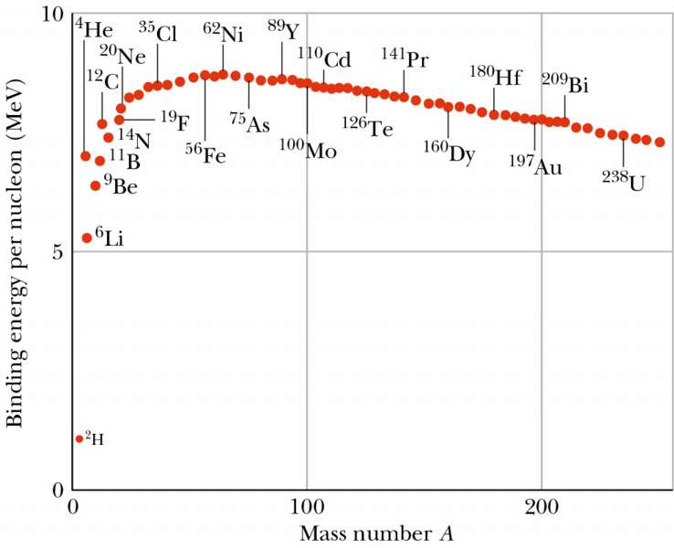
Lawson criterion ：
T T T
n n n
τ E \tau_E τ E
P ∝ T n τ E P\propto Tn\tau_E
P ∝ T n τ E
fusion
T n τ E ( m − 3 K e V s ) Tn\tau_E(m^{-3}KeVs) T n τ E ( m − 3 Ke V s ) energy(M e V MeV M e V
\ce{D + T -> n + ^4He} 2.9 × 1 0 21 2.9\times 10^{21} 2.9 × 1 0 21 17.589 17.589 17.589
\ce{D + ^3He -> p + ^4He} 5.1 × 1 0 22 5.1\times 10^{22} 5.1 × 1 0 22 18.353 18.353 18.353
\begin{aligned}&\ce{5D -> 2^4He + 2n + p}\\&\ce{n + p^{hot} -> D}\end{aligned} 1.1 × 1 0 23 1.1\times 10^{23} 1.1 × 1 0 23 43.2 43.2 43.2
\begin{aligned}&\ce{3D -> p + n + ^4He}\\&\ce{n + p^{hot}-> D}\end{aligned} 1.3 × 1 0 23 1.3\times 10^{23} 1.3 × 1 0 23 21.6 21.6 21.6
\ce{D + D -> n + ^3He} 5 × 1 0 23 5\times10^{23} 5 × 1 0 23 3.269 3.269 3.269
\ce{D + D -> p + T} 5 × 1 0 23 5\times 10^{23} 5 × 1 0 23 4.032 4.032 4.032
\ce{2T -> ^4He + 2n} 2 × 1 0 23 2\times 10^{23} 2 × 1 0 23 11.3 11.3 11.3
\ce{p + B_{11}-> 3^4He} 4 × 1 0 24 4\times10^{24} 4 × 1 0 24 8.682 8.682 8.682
\ce{p + ^6Li -> ^4He + ^3He} 1.25 × 1 0 25 1.25\times10^{25} 1.25 × 1 0 25 4 4 4
https://www.zhihu.com/question/398163463/answer/2596028611
Device
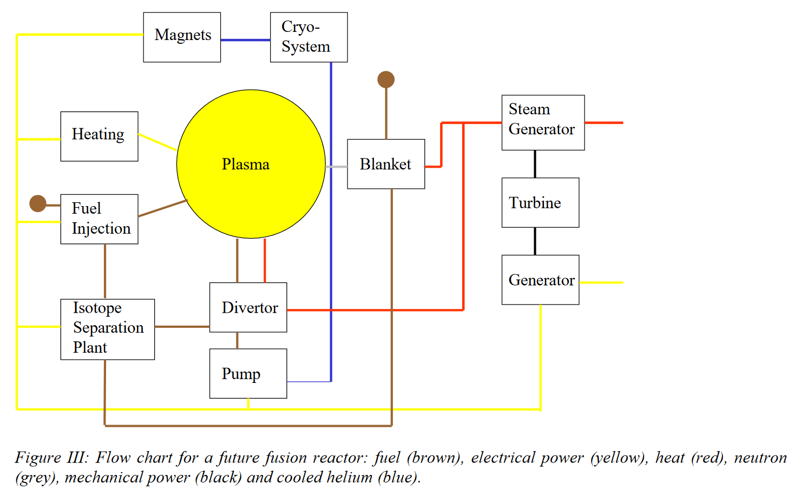
Tokamak
A tokamak is a device which uses a powerful magnetic field to confine plasma in the shape of a torus
The electric current in Solenoid coils should rise linearly
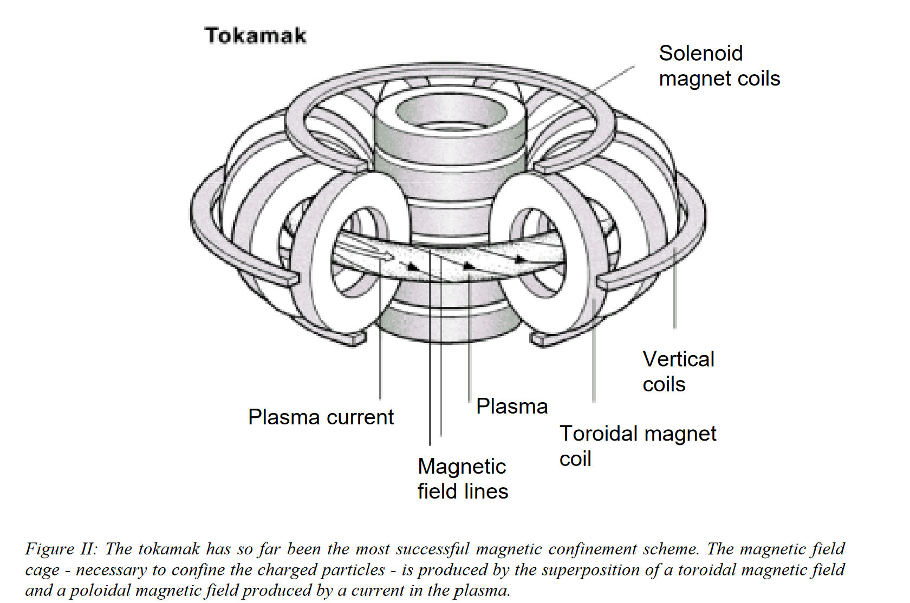
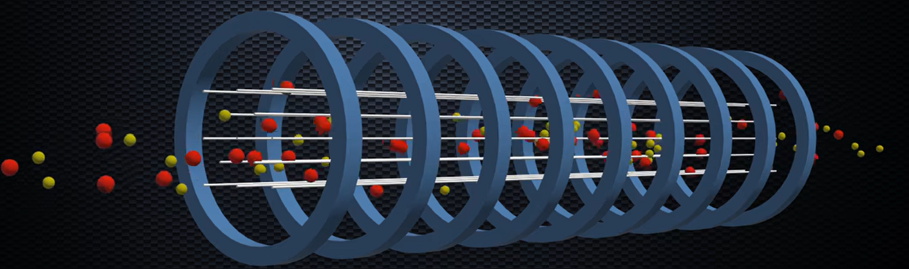
lamor procession
Toroidal Coils
Torus shape

Central Solennoid Coils
linear increasing current, super conducting
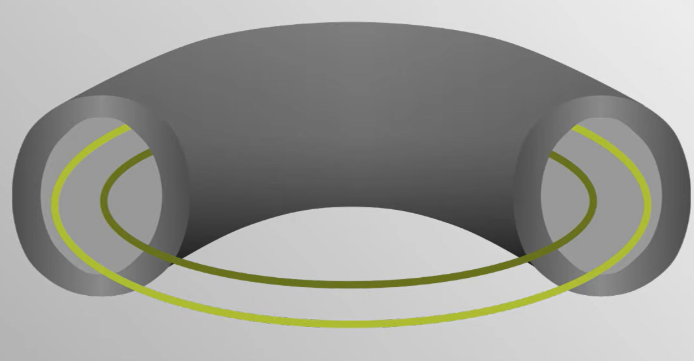
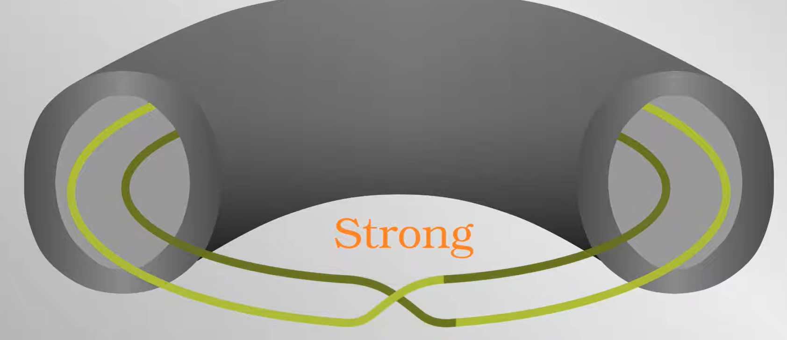
Poloidal Coils
control the section area of the plasma
Divertor
remove heavier ions, transfer fusion energy
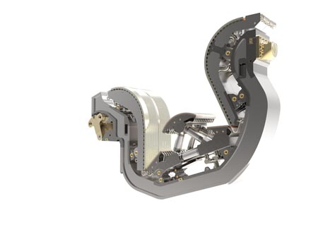
https://www.iter.org/mach/Divertor
Fusion Power
E = P t E= Pt
E = Pt
JET produce short energy of Q = 65 % Q=65\% Q = 65%
Development
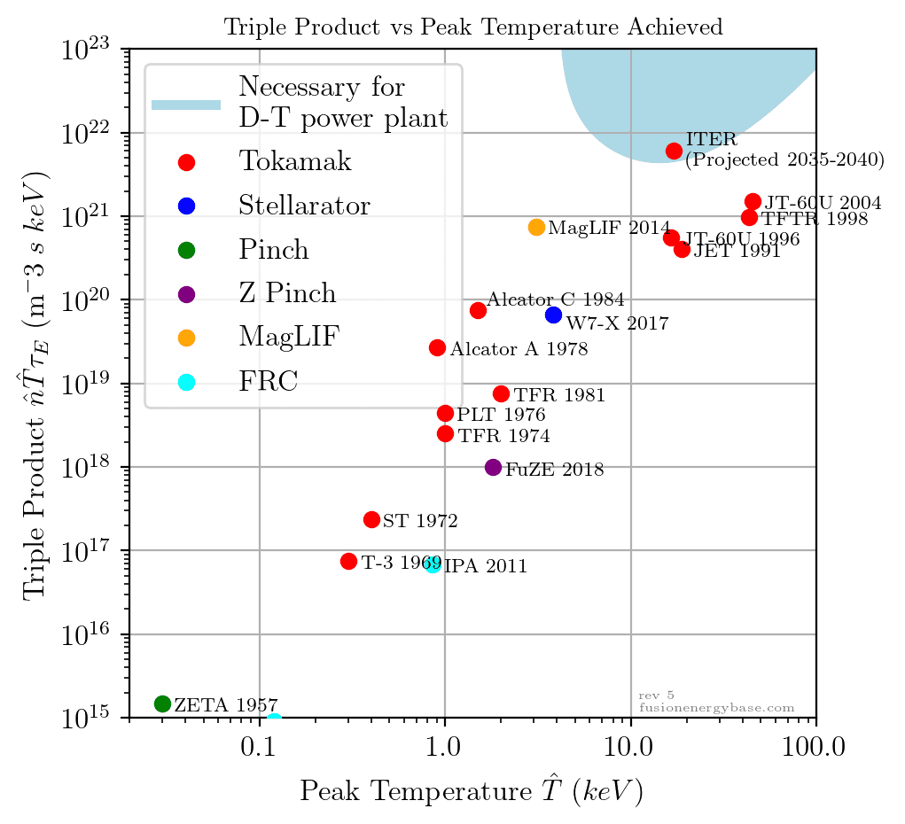
https://www.fusionenergybase.com/article/measuring-progress-in-fusion-energy-the-triple-products
VIDEO
Stellarators
Q → ∞ Q\rightarrow \infty
Q → ∞
but complex engineering problem
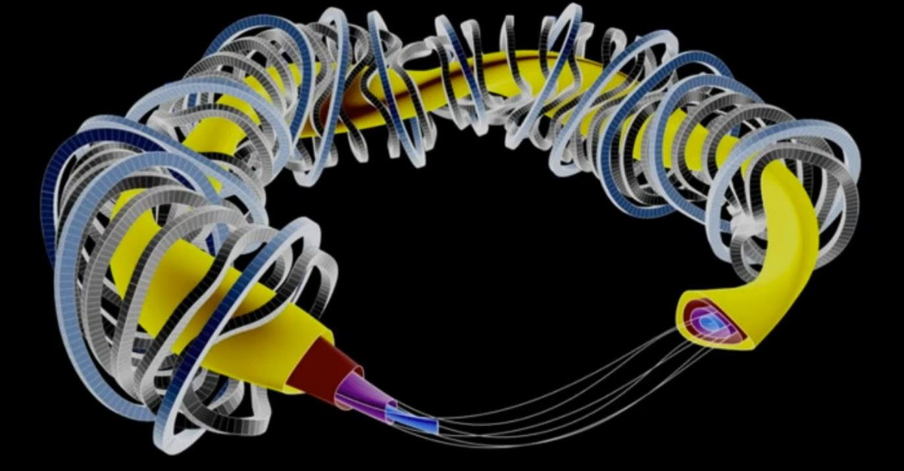
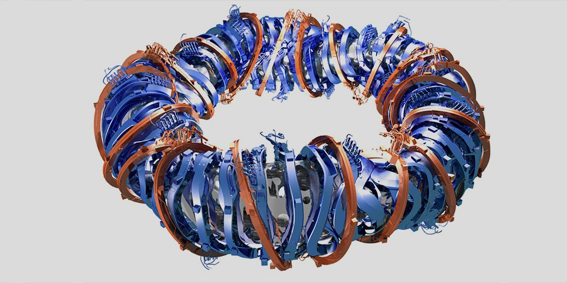
Z-pinch
− ∇ ( p + B 2 8 π ) + 1 4 π ( B ⋅ ∇ ) B = 0 -\nabla(p+\frac{B^2}{8\pi})+\frac{1}{4\pi}(B\cdot \nabla)B = 0
− ∇ ( p + 8 π B 2 ) + 4 π 1 ( B ⋅ ∇ ) B = 0
B = ( 0 , B θ ( r ) , B z ( r ) ) B = (0, B_\theta(r),B_z(r))
B = ( 0 , B θ ( r ) , B z ( r ))
B θ = 0 θ p i n c h p ( r ) = − B z 2 8 π + P 0 B z = 0 z p i n c h p ( r ) = J z π c 2 ( a 2 − r 2 ) \begin{matrix}
B_\theta = 0 & \theta~pinch & p(r) = \frac{-B_z^2}{8\pi}+P_0\\
B_z = 0 & z~pinch & p(r) = \frac{J_z\pi}{c^2}(a^2-r^2)
\end{matrix}
B θ = 0 B z = 0 θ p in c h z p in c h p ( r ) = 8 π − B z 2 + P 0 p ( r ) = c 2 J z π ( a 2 − r 2 )
unstable
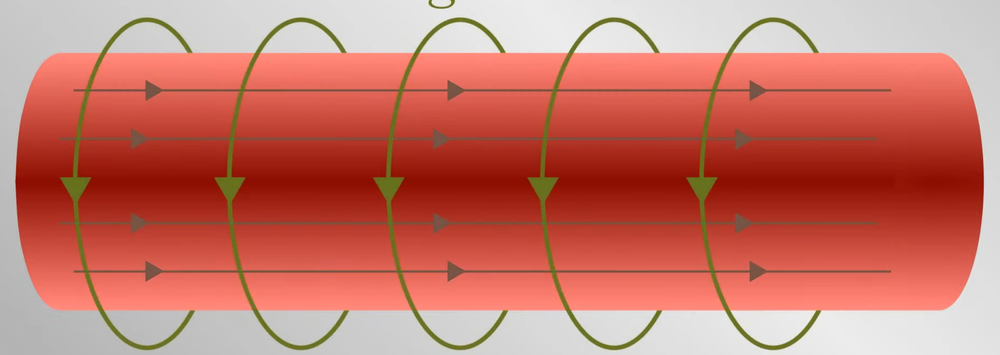
Sausage Instability
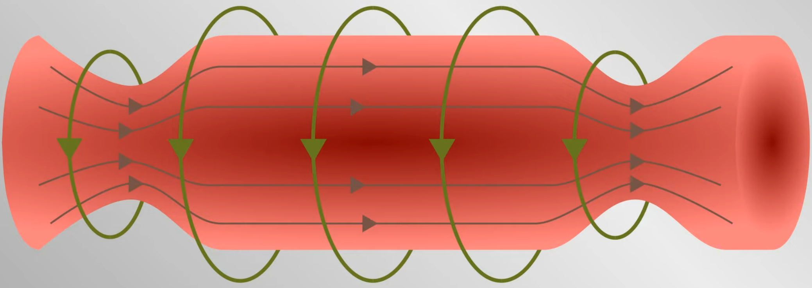
Kink Instability
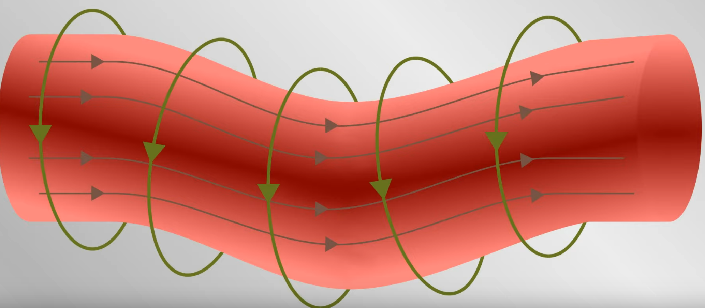
https://www.fusionenergybase.com/concept/z-pinch
https://sites.uw.edu/zpinchlab/z-pinch-attributes/
θ \theta θ Lenz’s Law, current of plasma is reverse of the applied current in coils
Field Reverse Configuration(FRC)
self stable torus plasma
General Fusion
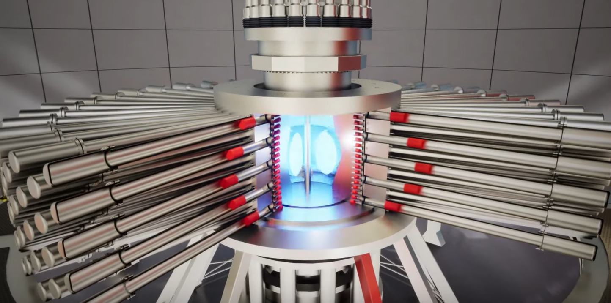
VIDEO
https://generalfusion.com/
Helion
\ce{D + He_3 -> p + He_4}
VIDEO
https://www.helionenergy.com
https://indico.cern.ch/event/776181/contributions/3376242/attachments/1856269/3049031/The_Field-Reversed_Configuration_FRC_Plasma_as_v2.pdf
Plasma
u i u_i u i i i i
q i q_i q i i i i
m i m_i m i i i i
ρ \rho ρ ρ = ∑ i m i \rho = \sum_i m_i ρ = ∑ i m i
γ \gamma γ
current density
J = ∑ i q i u i J = \sum_i q_iu_i
J = i ∑ q i u i
center of mass velocity
v = 1 ρ ∑ i m i u i v = \frac{1}{\rho}\sum_i m_i u_i
v = ρ 1 i ∑ m i u i
equation of continuity
∂ ρ ∂ t + ∇ ⋅ ( ρ v ) = 0 \frac{\partial \rho}{\partial t} + \nabla \cdot (\rho v) = 0
∂ t ∂ ρ + ∇ ⋅ ( ρ v ) = 0
equation of state
d d t ( p ρ γ ) = 0 \frac{d}{dt}\left(\frac{p }{\rho^\gamma}\right) = 0
d t d ( ρ γ p ) = 0
equation of motion
ρ ( ∂ ∂ t + v ⋅ ∇ ) v = J × B − ∇ p \rho\left(\frac{\partial }{\partial t}+v\cdot \nabla\right)v = J\times B-\nabla p
ρ ( ∂ t ∂ + v ⋅ ∇ ) v = J × B − ∇ p
∂ B ⃗ ∂ t = ∇ × ( v ⃗ × B ⃗ − η ∇ × B ⃗ ) \frac{\partial \vec{B}}{\partial t} = \nabla \times (\vec{v} \times \vec{B} - \eta \nabla \times \vec{B})
∂ t ∂ B = ∇ × ( v × B − η ∇ × B )
ρ ∂ v ⃗ ∂ t = − ∇ p + 1 μ 0 ( ∇ × B ⃗ ) × B ⃗ + J ⃗ × B ⃗ + ρ g ⃗ \rho \frac{\partial \vec{v}}{\partial t} = - \nabla p + \frac{1}{\mu_0} (\nabla \times \vec{B}) \times \vec{B} + \vec{J} \times \vec{B} + \rho \vec{g}
ρ ∂ t ∂ v = − ∇ p + μ 0 1 ( ∇ × B ) × B + J × B + ρ g
MHD Equilibrium
∇ p = j × B \nabla p = j\times B
∇ p = j × B
p p p j j j B B B
Maxwell
μ 0 J = ∇ × B \mu_0 J = \nabla\times B
μ 0 J = ∇ × B
Grad-Shafranov EquationCartesian coordinates
∇ 2 A = − μ 0 d d A ( p + B z 2 2 μ 0 ) \nabla^2 A = -\mu_0\frac{d}{dA}(p+\frac{B_z^2}{2\mu_0})
∇ 2 A = − μ 0 d A d ( p + 2 μ 0 B z 2 )
B = ( ∂ A ( x , y ) ∂ y , − ∂ A ( x , y ) ∂ x , B z ( x , y ) ) = ∇ A × z ^ + B z z ^ B = \left(\frac{\partial A(x,y)}{\partial y},-\frac{\partial A(x,y)}{\partial x}, B_z(x,y)\right)= \nabla A\times \hat z + B_z\hat z B = ( ∂ y ∂ A ( x , y ) , − ∂ x ∂ A ( x , y ) , B z ( x , y ) ) = ∇ A × z ^ + B z z ^ A A A p p p